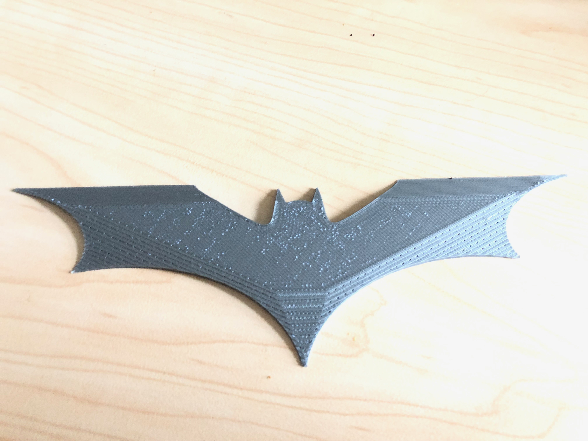
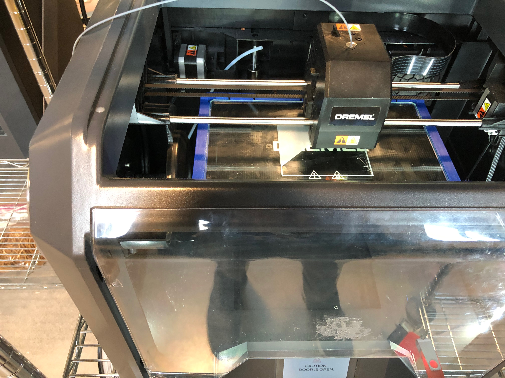
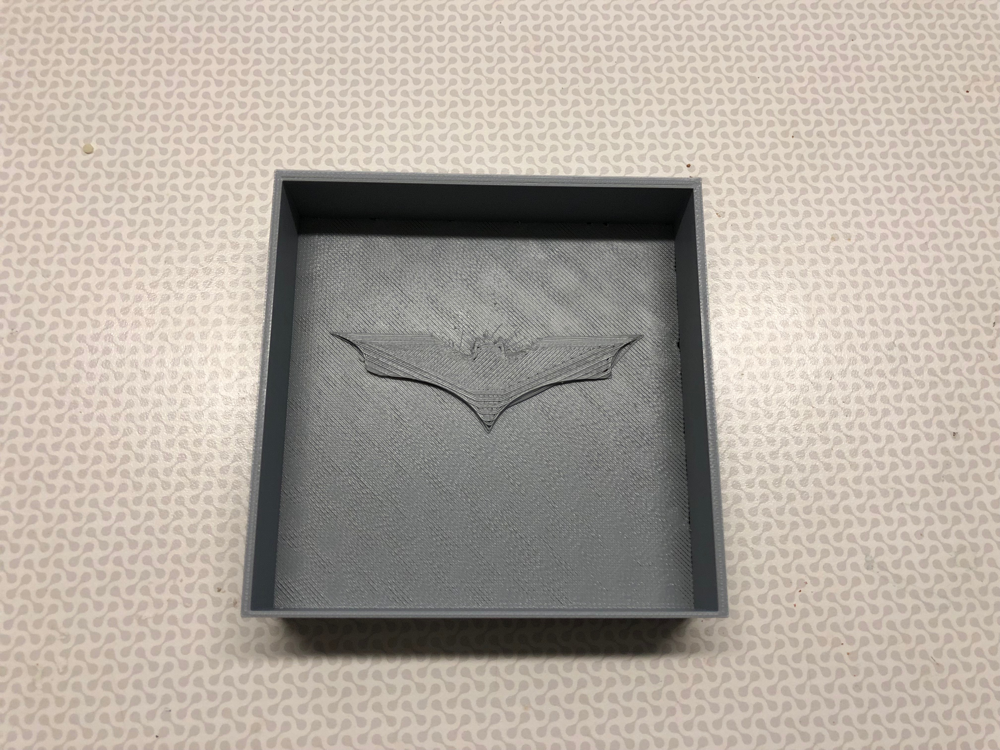
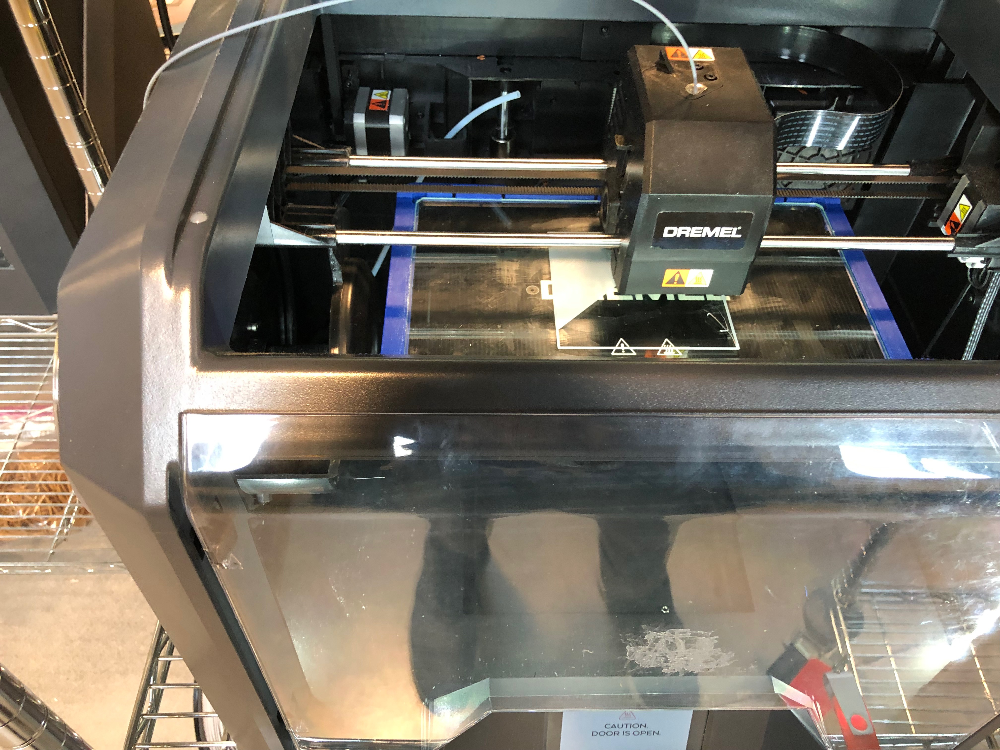
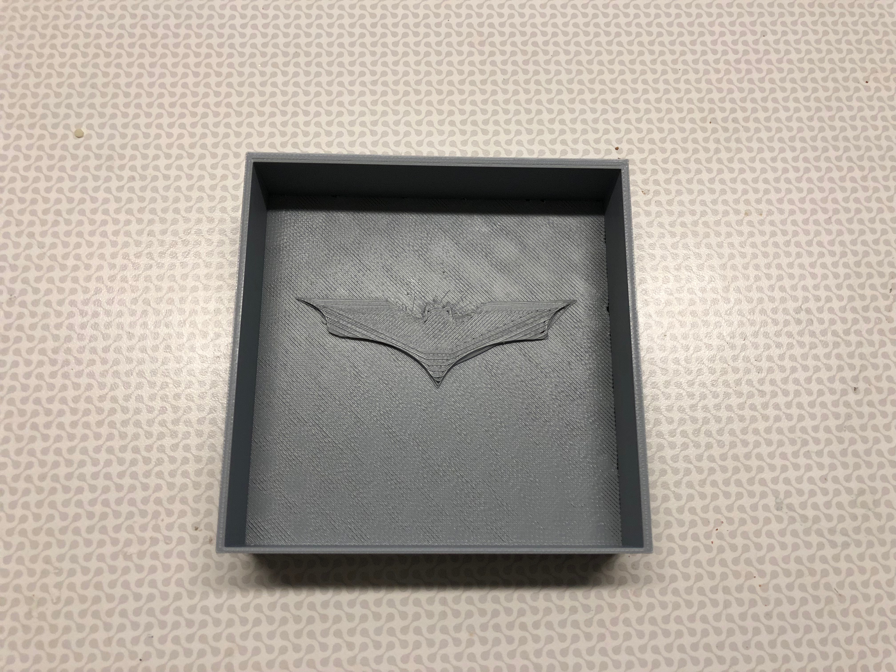
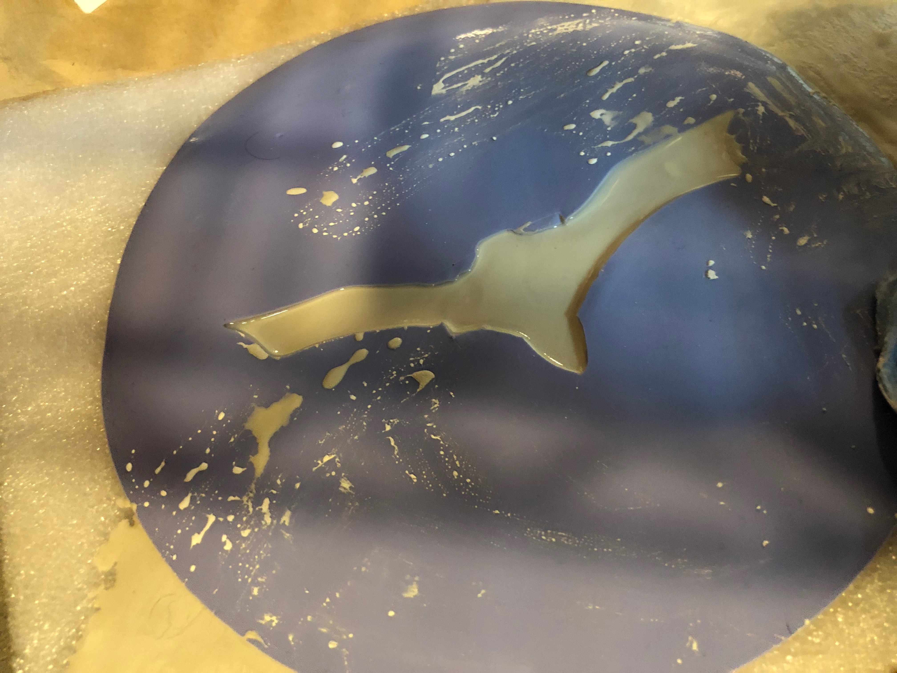
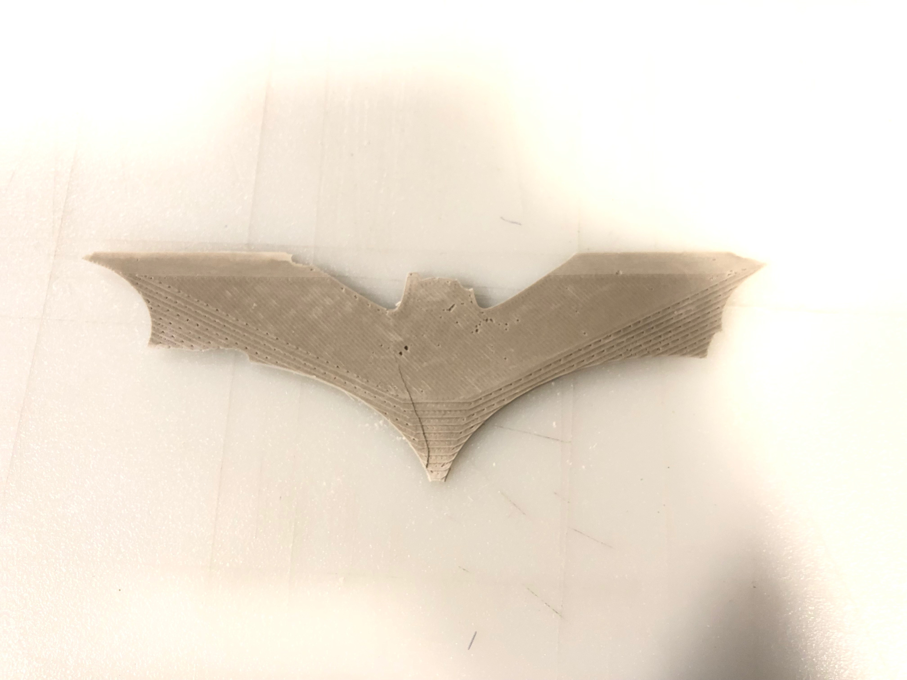

Casting Batarangs

What is it?
Batarang!!! Designed a mold to cast batarangs in Plaster. Instead of beign sharp to cut through, these will create blunt force.
The Process
First I designed a mold to cast my actual mold in silicone. Designing the stl file in Rhino, I superimposed the batarang into a box structure. The design was exported as a .stl file to be 3D printed.
  
 
I then mixed the oomoo and poured it directly into the 3d printed mold. I let the silicone set overnight.

The silicone mold had really bad definition and I was not happy with it. Therefore I decided to change my process.
I scaled up the batarang and removed the box shape. I 3d printed the actual batarang.
I then suspended this batarang on a plate and poured the silicone around it to form a 3d mold and capture the curvs and edges of the design. The silicone was allowed to set overnight and the mold was ready. I then mixed the plaster and poured it into the mold.

The Cast
The plaster was allowed to set for 4 hours and then treated with a heat gun. In retrospect, I should have allowed a longer setting time and used an oven for the curing process. While the mold worked well and captured all the edges and curves of the design, there was slight damage to the plaster while removing it from the mold.
